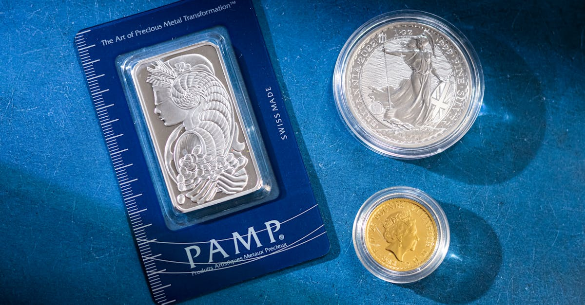

La Tempête sur le Détroit d'Hormuz : Un Séisme Géopolitique et Économique
Le détroit d'Hormuz, un passage maritime étroit mais d'une importance capitale, a de nouveau été le théâtre d'une tension géopolitique majeure. En ce début avril, après un mois de perturbations intenses autour de ce goulot d'étranglement énergétique mondial, une déclaration du président américain Donald Trump a ravivé les craintes et fait trembler les marchés. «Avec un peu plus de temps, nous pouvons facilement OUVRIR LE DÉTROIT D'HORMUZ, PRENDRE LE PÉTROLE ET FAIRE FORTUNE», a-t-il écrit, jetant de l'huile sur le feu d'une crise maritime déjà historique. Cette rhétorique, loin de calmer les esprits, a au contraire amplifié l'incertitude planant sur l'approvisionnement mondial en énergie et, par ricochet, sur l'ensemble de l'économie.
👉 À lire : Or et Hormuz : L'IA face à la tempête inflationniste
Pourquoi Hormuz est-il si crucial ? Simplement parce qu'il représente le principal point de transit pour une part colossale du pétrole et du gaz naturel liquéfié (GNL) mondial. Toute entrave significative à la navigation dans ce détroit, reliant le golfe Persique au golfe d'Oman, a des répercussions immédiates et profondes sur les prix de l'énergie et, in fine, sur l'inflation globale. Les marchés financiers, déjà sous pression en raison d'autres facteurs macroéconomiques, ont réagi avec nervosité. Les cours du pétrole ont bondi, les primes d'assurance pour les navires transitant par la zone ont explosé, et la volatilité est devenue la nouvelle norme. Cette situation n'est pas sans précédent, mais son intensité et le contexte géopolitique actuel la rendent particulièrement préoccupante.
👉 À lire : Le Spectre de la Stagflation : L'Or Face aux Tensions Mondiales
L'idée même de «prendre le pétrole» et de «faire fortune» dans un tel scénario est symptomatique d'une approche agressive qui privilégie la force au détriment de la stabilité diplomatique. Pour les investisseurs, cette instabilité se traduit par une quête accrue de refuges. L'or et les métaux précieux, par leur nature intrinsèque d'actifs tangibles et décorrélés des monnaies fiduciaires, se retrouvent naturellement sous les feux des projecteurs. Ils incarnent la résilience face aux chocs exogènes et offrent une protection contre l'érosion du pouvoir d'achat. La crise d'Hormuz n'est pas seulement une crise énergétique ; elle est un baromètre des tensions mondiales et un rappel brutal de la fragilité de notre interdépendance économique, poussant les investisseurs à réévaluer leurs stratégies face à un horizon de plus en plus incertain.

L'Effet Domino sur les Chaînes d'Approvisionnement Mondiales
Au-delà de la flambée des prix du pétrole, la crise d'Hormuz a déclenché un effet domino dévastateur sur les chaînes d'approvisionnement mondiales. Le détroit est une artère vitale non seulement pour l'énergie mais aussi pour une multitude de biens et de matières premières transitant entre l'Orient et l'Occident. «La perturbation d'un point stratégique comme Hormuz ne touche pas seulement les pétroliers ; elle grippe toute une machinerie logistique globale, des composants électroniques aux produits manufacturés, en passant par les denrées alimentaires», explique fictivement Dr. Élisabeth Dubois, analyste en logistique internationale. Les retards, les déviations de routes maritimes et l'augmentation des coûts d'assurance et de carburant se sont répercutés à chaque maillon de la chaîne, entraînant des pénuries potentielles et, inévitablement, une pression inflationniste accrue sur les prix à la consommation.
Les entreprises, déjà fragilisées par les chocs précédents, se retrouvent face à un dilemme : absorber ces coûts supplémentaires, réduisant ainsi leurs marges, ou les répercuter sur les consommateurs, risquant de freiner la demande. L'ère du «juste-à-temps», qui a optimisé l'efficacité mais aussi accru la vulnérabilité des chaînes d'approvisionnement, montre ses limites face à de tels événements géopolitiques imprévus. Les stocks tampons, souvent réduits au minimum pour des raisons de coût, se sont révélés insuffisants pour amortir le choc, exposant la fragilité structurelle de l'économie mondiale à des perturbations localisées mais systémiques.
Cette situation met en lumière la nécessité pour les entreprises et les gouvernements de repenser la résilience de leurs approvisionnements. Faut-il relocaliser la production ? Diversifier les sources et les routes ? Ces questions complexes n'ont pas de réponses simples, mais l'urgence est palpable. Pour l'investisseur, cette désorganisation des chaînes d'approvisionnement se traduit par un risque accru sur les entreprises dépendant fortement de l'import-export via ces routes critiques. Dans ce contexte de forte incertitude et de pressions inflationnistes, les actifs tangibles et les valeurs refuges comme l'or et certains métaux précieux voient leur attrait renforcé. Ils offrent une protection contre la dépréciation des monnaies et la volatilité des marchés actions, devenant des piliers de stabilité dans un portefeuille secoué par les vagues de la géopolitique et de la logistique mondiale.
Le Pétrole, Cœur du Problème : Volatilité et Incertitude
Au cœur de la crise d'Hormuz réside, sans surprise, le pétrole. Le détroit est le point de passage d'environ 20% du pétrole brut mondial et d'une quantité significative de gaz naturel liquéfié. L'idée d'un blocage ou d'une perturbation majeure suffit à propulser les prix de l'or noir vers des sommets, comme nous l'avons observé. Cette flambée n'est pas qu'une simple fluctuation ; elle est le reflet direct de la peur d'une rupture d'approvisionnement et de l'impact économique dévastateur qu'une telle pénurie pourrait engendrer. «Le pétrole est le sang de l'économie mondiale. Quand cette circulation est menacée, c'est tout l'organisme qui souffre», a souligné un expert fictif du marché de l'énergie, M. Laurent Mercier. La volatilité des prix du baril de Brent ou de WTI n'est plus une simple donnée technique, mais un indicateur direct de l'état de santé géopolitique et économique de la planète.
Les conséquences d'une telle instabilité pétrolière sont multiples. Pour les consommateurs, cela signifie une hausse des prix à la pompe, des coûts de transport plus élevés pour les biens et services, et une pression accrue sur le pouvoir d'achat. Pour les entreprises, c'est une augmentation des charges d'exploitation, une incertitude quant à la planification des coûts et une érosion potentielle de la rentabilité. Les économies fortement dépendantes des importations de pétrole sont particulièrement vulnérables, risquant de sombrer dans la récession. Les banques centrales se retrouvent également dans une position délicate, devant jongler entre la nécessité de contenir l'inflation et le risque de freiner une croissance économique déjà fragile.
Cette crise illustre parfaitement la corrélation étroite entre la géopolitique, l'énergie et la stabilité financière. Chaque déclaration, chaque mouvement de navire dans la région est scruté, analysé, et interprété par les marchés. Les investisseurs cherchent à anticiper les prochaines vagues de volatilité, mais la complexité des facteurs en jeu rend cette tâche quasi impossible pour l'analyse humaine seule. Face à cette incertitude omniprésente et à la dépendance critique du monde au pétrole, les investisseurs se tournent naturellement vers des actifs qui ont prouvé leur résilience historique. L'or, en particulier, brille de son éclat de valeur refuge, offrant une couverture contre l'inflation et la dépréciation des monnaies dans un contexte de turbulences énergétiques.

L'Or, le Refuge Ultime Face à la Tourmente Géopolitique
Dans ce ballet incessant de tensions géopolitiques et de perturbations économiques, l'or réaffirme son statut de refuge ultime. Historiquement, le métal jaune a toujours été la valeur de dernier recours en période de crise, et la situation autour du détroit d'Hormuz ne fait que renforcer cette perception. Lorsque les marchés boursiers vacillent, les obligations souveraines semblent incertaines et les devises fiduciaires sont menacées par l'inflation, l'or offre une ancre de stabilité. Sa valeur n'est pas liée à la performance d'une entreprise, à la politique d'un gouvernement ou à la santé d'une économie particulière ; elle est intrinsèque et universellement reconnue. «L'or n'est pas qu'un investissement ; c'est une assurance contre l'imprévisible, une monnaie qui traverse les âges et les crises sans perdre sa substance», argumente fictivement Mme Sophie Duval, économiste spécialisée dans les marchés des matières premières.
La demande pour l'or est stimulée par plusieurs facteurs dans le contexte actuel. Premièrement, l'incertitude géopolitique : chaque escalade de tension au Moyen-Orient, chaque menace sur les routes commerciales cruciales, incite les investisseurs à délaisser les actifs risqués au profit de la sécurité de l'or. Deuxièmement, l'inflation : les perturbations des chaînes d'approvisionnement et la flambée des prix de l'énergie alimentent les craintes d'une inflation persistante, contre laquelle l'or est une protection éprouvée. Troisièmement, la dépréciation des monnaies : face à l'incertitude économique, les banques centrales pourraient être tentées d'assouplir davantage leur politique monétaire, ce qui tend à affaiblir les devises et à renforcer l'attrait de l'or.
Les investisseurs, qu'ils soient institutionnels ou particuliers, intègrent l'or dans leurs portefeuilles non seulement pour diversifier mais surtout pour protéger leur capital. Les fonds négociés en bourse (ETF) adossés à l'or ont vu leurs encours augmenter, et la demande physique, sous forme de lingots et de pièces, reste robuste. Dans un monde où les crises se succèdent avec une régularité déconcertante, l'or n'est plus une simple option, mais une composante essentielle d'une stratégie d'investissement résiliente. Sa performance dans le sillage de la crise d'Hormuz le confirme une fois de plus : il est le baromètre de la confiance et le bouclier contre la tourmente.
Les Métaux Précieux : Plus Qu'un Simple Abri, une Opportunité Stratégique
Si l'or capte souvent toute l'attention en période de crise, il serait réducteur d'ignorer le rôle et le potentiel des autres métaux précieux comme l'argent, le platine et le palladium. Ces derniers, bien qu'également considérés comme des valeurs refuges, possèdent une dualité intéressante : ils sont à la fois des actifs d'investissement et des matières premières industrielles essentielles. La crise d'Hormuz et ses répercussions sur les chaînes d'approvisionnement mondiales les placent également sous un éclairage nouveau, les transformant en de véritables opportunités stratégiques pour l'investisseur averti. «L'argent, par exemple, bénéficie non seulement de son statut de 'petit frère de l'or', mais aussi de sa demande croissante dans l'électronique et les technologies vertes. Une perturbation mondiale affecte sa production et sa livraison, créant des tensions sur son prix», observe fictivement M. Jean-Pierre Lefevre, analyste senior en métaux rares.
Le platine et le palladium, quant à eux, sont fortement liés à l'industrie automobile, notamment pour leurs applications dans les pots catalytiques. Si la crise d'Hormuz impacte la production et le transport des véhicules ou de leurs composants, la demande industrielle pour ces métaux pourrait temporairement fléchir. Cependant, l'incertitude économique et la recherche de valeurs refuges peuvent compenser cette baisse, voire la surpasser, les investisseurs se tournant vers eux pour leur potentiel de diversification et leur protection contre l'inflation. De plus, les perturbations dans les pays producteurs de ces métaux (souvent des régions politiquement instables) peuvent créer des chocs d'approvisionnement supplémentaires, propulsant leurs prix à la hausse indépendamment de la demande industrielle immédiate.
Investir dans ces métaux précieux demande une compréhension nuancée de leurs dynamiques de marché. Leur volatilité peut être plus prononcée que celle de l'or, mais leur potentiel de gain, en période de forte incertitude ou de reprise économique, est souvent supérieur. Ils ne sont pas seulement des abris contre la tempête, mais aussi des vecteurs de croissance pour un portefeuille bien diversifié. Dans le contexte actuel, où la géopolitique redessine les cartes économiques, intégrer ces métaux dans une stratégie d'investissement permet de capitaliser sur des tendances complexes, qu'il s'agisse de la demande industrielle future ou de la quête éternelle de sécurité face aux chocs mondiaux.

L'Ère de l'Instabilité : Pourquoi les Marchés Traditionnels Tremblent
L'épisode du détroit d'Hormuz n'est pas un événement isolé ; il s'inscrit dans une ère de volatilité et d'instabilité croissantes qui met à l'épreuve les fondations des marchés traditionnels. Les bourses mondiales ont réagi avec une nervosité palpable, les indices actions affichant des baisses significatives à la moindre nouvelle d'escalade. Les investisseurs, confrontés à des risques géopolitiques imprévisibles, à une inflation persistante et à des perspectives de croissance économique incertaines, sont enclins à retirer leurs capitaux des actifs risqués. «Nous assistons à un changement de paradigme. Les événements 'cygnes noirs' deviennent plus fréquents, et la capacité des marchés à les absorber sans turbulence majeure diminue. La prudence est de mise», observe fictivement Dr. Antoine Dubois, spécialiste des marchés financiers internationaux.
Les marchés obligataires, traditionnellement considérés comme des refuges, sont également sous pression. Si les obligations souveraines des pays stables peuvent encore attirer une partie des capitaux en quête de sécurité, les rendements réels négatifs et les risques inflationnistes sapent leur attrait à long terme. La quête de rendement pousse certains investisseurs vers des obligations d'entreprise plus risquées, mais la dégradation des perspectives économiques rend ces placements d'autant plus vulnérables. Quant aux marchés des devises, ils sont devenus un champ de bataille où les monnaies des pays les plus exposés aux chocs énergétiques et géopolitiques subissent de fortes pressions à la baisse, tandis que les devises refuges comme le dollar américain ou le franc suisse voient leur valeur s'apprécier temporairement.
Cette fragmentation et cette incertitude généralisée obligent les investisseurs à repenser fondamentalement leurs stratégies. Les modèles d'investissement basés sur une croissance stable et des risques prévisibles ne sont plus adaptés à la réalité actuelle. La diversification traditionnelle ne suffit plus toujours à amortir les chocs. Il est impératif d'intégrer des analyses plus fines des risques géopolitiques, des dynamiques des matières premières et des réactions des banques centrales. C'est dans ce contexte que les actifs tels que l'or et les métaux précieux révèlent toute leur pertinence, offrant une protection contre la dévalorisation des portefeuilles traditionnels. Ils agissent comme un contrepoids essentiel, permettant de naviguer dans cette ère d'instabilité avec une résilience accrue et de capitaliser sur des opportunités que les marchés traditionnels ne peuvent plus offrir.
L'IA au Service de la Résilience et de l'Opportunité dans le Trading des Métaux Précieux
Face à la complexité et à la rapidité des crises comme celle d'Hormuz, l'analyse humaine, aussi experte soit-elle, atteint ses limites. C'est là que l'intelligence artificielle (IA) entre en jeu, révolutionnant la manière dont les investisseurs peuvent aborder le trading des métaux précieux. L'IA est capable de traiter et d'analyser en temps réel des volumes de données colossaux – des flux d'actualités géopolitiques aux données de navigation maritime, en passant par les indicateurs économiques, les volumes de trading et les sentiments de marché. Elle identifie des corrélations et des schémas que l'œil humain ne verrait jamais, permettant de détecter des signaux faibles avant qu'ils ne deviennent des tendances majeures. «L'IA ne remplace pas l'intuition, elle l'augmente. Elle offre une vision à 360 degrés des marchés, une capacité d'anticipation et une réactivité sans précédent», déclare fictivement Dr. Clara Moreau, spécialiste de l'IA appliquée à la finance.
Dans le contexte actuel de volatilité exacerbée des prix de l'or et des autres métaux précieux, cette capacité d'analyse prédictive est inestimable. Un système IA peut, par exemple, évaluer instantanément l'impact d'une nouvelle déclaration politique sur les prix du pétrole, puis en déduire la réaction probable des marchés de l'or et de l'argent. Il peut surveiller les volumes de fret dans le détroit d'Hormuz, les primes d'assurance et les mouvements de flottes pour anticiper les tensions. Mieux encore, l'IA peut non seulement prédire les mouvements de marché, mais aussi exécuter des stratégies de trading complexes avec une précision et une rapidité impossibles pour un opérateur humain, 24 heures sur 24, 7 jours sur 7.
L'avantage n'est pas seulement dans la détection d'opportunités, mais aussi dans la gestion des risques. Les algorithmes d'IA peuvent être programmés pour réagir instantanément à des événements imprévus, ajustant les positions pour minimiser les pertes ou sécuriser les gains. Ils peuvent diversifier intelligemment les portefeuilles de métaux précieux, optimisant l'exposition à l'or, à l'argent, au platine ou au palladium en fonction des conditions de marché et des objectifs de l'investisseur. En somme, l'IA transforme l'incertitude en une source d'opportunités. Elle offre aux investisseurs une résilience inégalée face aux chocs géopolitiques et une agilité pour naviguer les marchés des métaux précieux avec une efficacité maximale, permettant de capitaliser sur la nature intrinsèque de ces actifs comme refuges et moteurs de croissance.
Conclusion : Naviguer l'Incertitude avec Intelligence et Agilité
La crise du détroit d'Hormuz est un rappel brutal que notre monde est intrinsèquement interconnecté et que la stabilité économique est constamment menacée par des facteurs géopolitiques imprévisibles. Les perturbations des chaînes d'approvisionnement, la volatilité des prix de l'énergie et la nervosité des marchés financiers soulignent une nouvelle fois l'importance cruciale de la résilience dans toute stratégie d'investissement. Dans ce contexte, l'or et les métaux précieux ne sont pas de simples commodités ; ils sont des piliers de stabilité, des boucliers contre l'inflation et des refuges éprouvés en période de turbulences. Leur rôle en tant que diversificateurs de portefeuille et protecteurs de capital est plus pertinent que jamais, offrant une ancre dans la tempête.
Cependant, la complexité et la rapidité des marchés actuels exigent plus que des principes d'investissement solides. Elles requièrent des outils à la hauteur des défis. L'intelligence artificielle, avec sa capacité à analyser des données massives en temps réel, à détecter des tendances subtiles et à exécuter des transactions avec une précision chirurgicale, émerge comme le compagnon indispensable de l'investisseur moderne. Elle permet de transformer l'incertitude en opportunité, offrant une longueur d'avance dans la navigation des marchés des métaux précieux. En combinant la sagesse intemporelle de l'investissement dans l'or et les métaux précieux avec la puissance analytique et prédictive de l'IA, les investisseurs peuvent non seulement protéger leur patrimoine, mais aussi le faire fructifier, même dans les environnements les plus chaotiques.
L'avenir est incertain, mais il n'est pas forcément sombre pour ceux qui sont équipés pour y faire face. La capacité à anticiper, à s'adapter et à agir de manière décisive sera la clé du succès. Les crises comme celle d'Hormuz, bien que déstabilisantes, sont aussi des catalyseurs d'innovation. Elles nous poussent à chercher de nouvelles solutions, à adopter des technologies de pointe pour sécuriser nos investissements et capitaliser sur les opportunités émergentes. Investir dans l'or et les métaux précieux, armé de l'intelligence artificielle, n'est plus un luxe, mais une stratégie essentielle pour quiconque souhaite naviguer avec succès les eaux tumultueuses de l'économie mondiale.